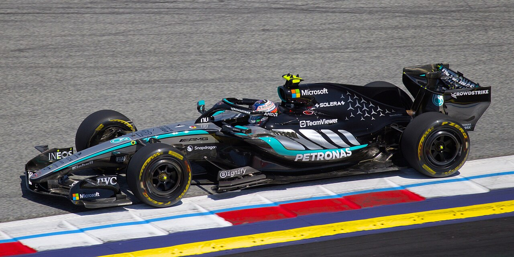
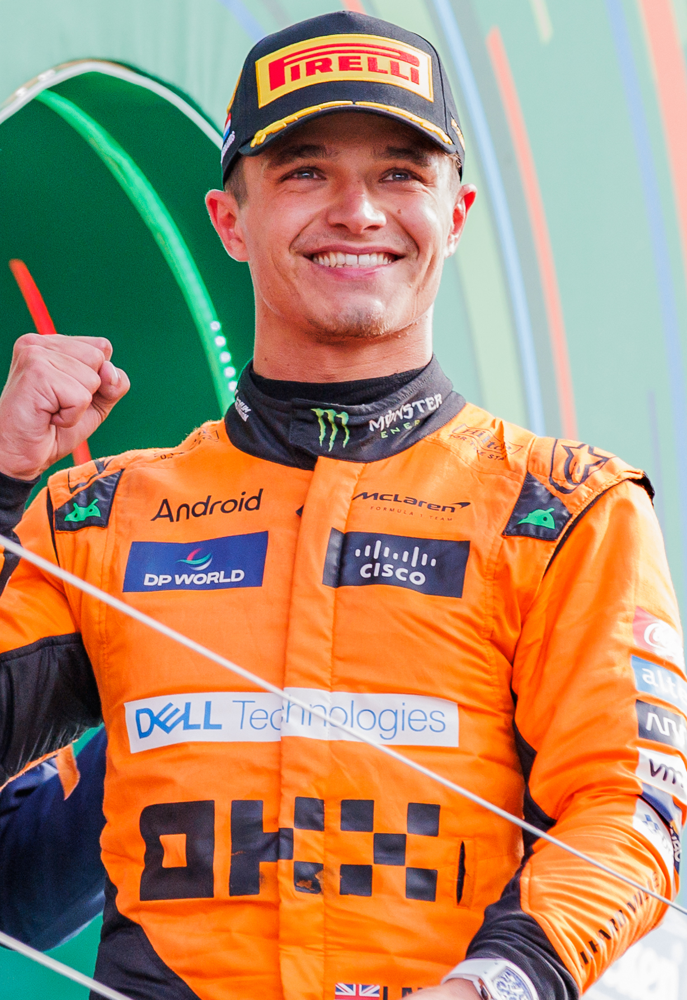
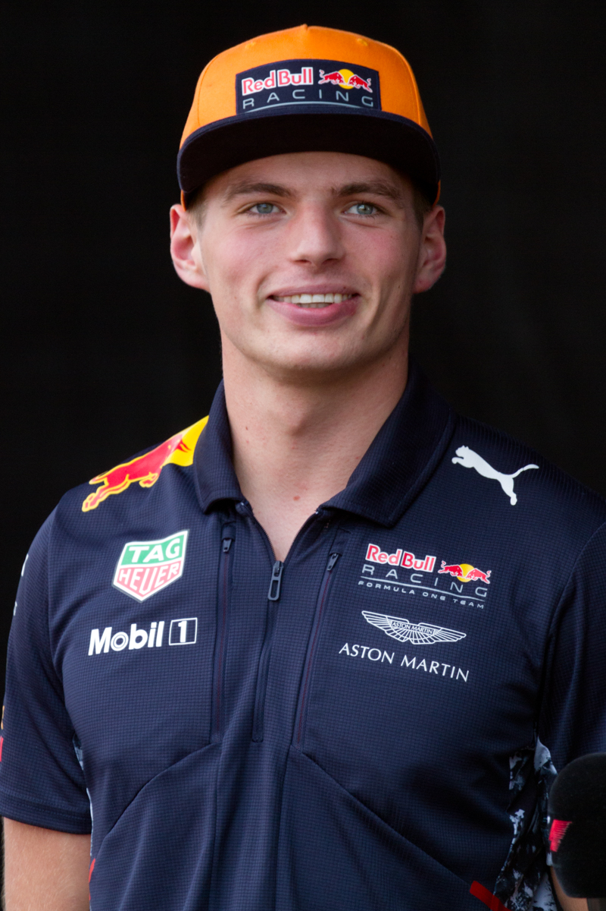
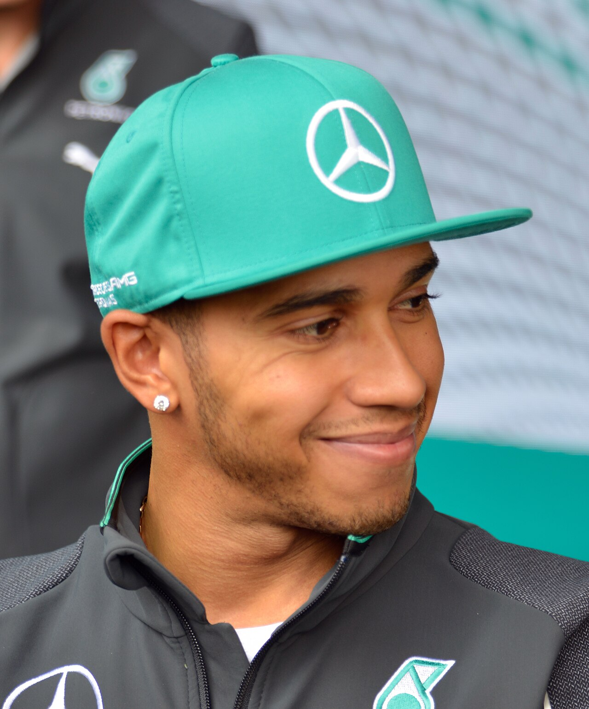
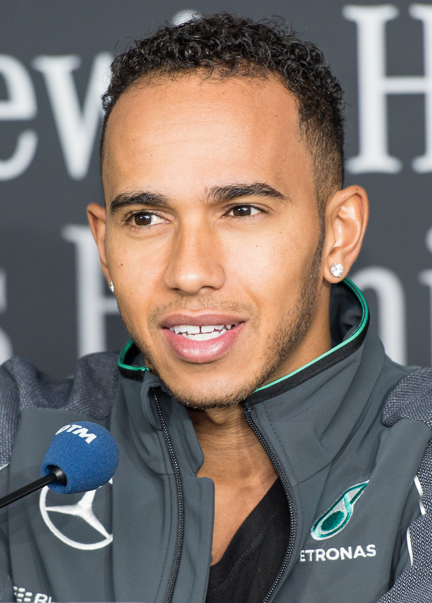
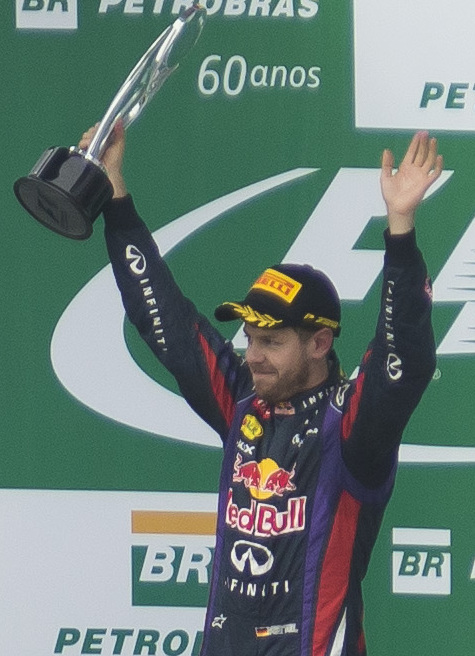
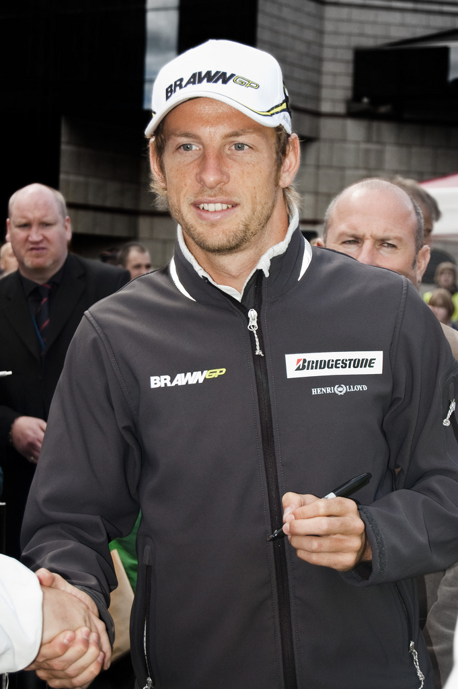
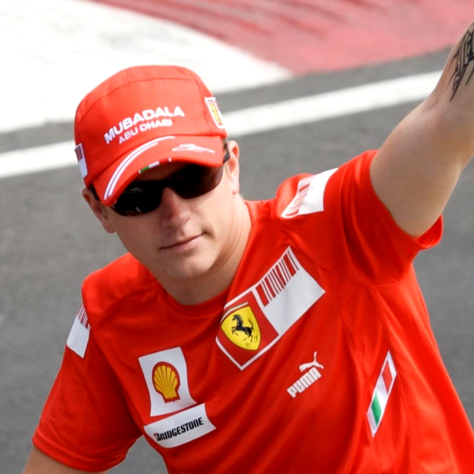
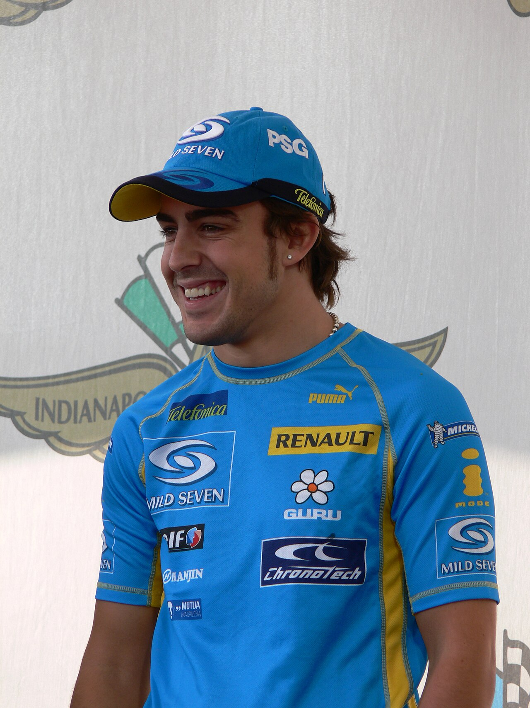

ARCHIVIO STORICO DELLA FORMULA 1 MODERNA
Esplora oltre vent'anni di campionati, gare leggendarie e sorpassi storici
Benvenuto nella Libreria delle Stagioni Passate. Qui puoi rivivere ogni singolo campionato mondiale di Formula 1 dal 2006 fino alla stagione corrente 2026. Per ciascun anno è disponibile una pagina monografica dedicata contenente la cronaca approfondita della stagione, le classifiche complete ufficiali, l'analisi della miglior gara e del sorpasso più spettacolare, con filmati video d'archivio e gallerie fotografiche salvate in locale nella cartella unificata media/.

Miglior Gara: Gran Premio del Messico (Città del Messico)
Duello Chiave: La staccata di Antonelli a Monza e la difesa di Verstappen in Messico

Miglior Gara: Gran Premio di Abu Dhabi (Yas Marina)
Duello Chiave: Il sorpasso di Piastri su Verstappen a Spa e la staccata di Norris a Suzuka

Miglior Gara: Gran Premio di San Paolo (Brasile, Interlagos)
Duello Chiave: La staccata da oltre 60 metri di Oscar Piastri su Charles Leclerc a Baku

Miglior Gara: Gran Premio di Las Vegas (Nevada, USA)
Duello Chiave: Fernando Alonso su Sergio Perez al fotofinish a Interlagos (+0.053s)

Miglior Gara: Gran Premio di Gran Bretagna (Silverstone)
Duello Chiave: Il doppio sorpasso di Lewis Hamilton all'ultima curva a Silverstone

Miglior Gara: Gran Premio di Abu Dhabi (Yas Marina)
Duello Chiave: Max Verstappen su Lewis Hamilton all'ultimo giro di Abu Dhabi

Miglior Gara: Gran Premio d'Italia (Monza) & GP di Sakhir
Duello Chiave: George Russell su Valtteri Bottas all'esterno a Sakhir

Miglior Gara: Gran Premio di Germania (Hockenheim)
Duello Chiave: Il corpo a corpo tra Charles Leclerc e Max Verstappen a Silverstone

Miglior Gara: Gran Premio degli Stati Uniti (Austin, COTA)
Duello Chiave: Daniel Ricciardo a Shanghai: la staccata folle su Valtteri Bottas

Miglior Gara: Gran Premio dell'Azerbaigian (Baku)
Duello Chiave: Il 'Triple Overtake' di Daniel Ricciardo alla staccata di Curva 1 a Baku

Miglior Gara: Gran Premio del Brasile (Interlagos)
Duello Chiave: Max Verstappen su Nico Rosberg all'esterno di Curva 3 a Interlagos

Miglior Gara: Gran Premio degli Stati Uniti (Austin, COTA)
Duello Chiave: Max Verstappen su Felipe Nasr all'esterno di Blanchimont a Spa (+300 km/h)

Miglior Gara: Gran Premio del Bahrain (Sakhir) - 'The Duel in the Desert'
Duello Chiave: Daniel Ricciardo all'esterno all'Hungaroring su Hamilton e Alonso

Miglior Gara: Gran Premio della Malesia (Sepang) & GP di Gran Bretagna
Duello Chiave: Il sorpasso vietato di Sebastian Vettel su Mark Webber a Sepang

Miglior Gara: Gran Premio del Brasile (Interlagos)
Duello Chiave: La rimonta a raffica di Vettel a Interlagos e Raikkonen ad Abu Dhabi

Miglior Gara: Gran Premio del Canada (Montreal)
Duello Chiave: Jenson Button su Sebastian Vettel all'ultimo giro a Montreal

Miglior Gara: Gran Premio di Abu Dhabi (Yas Marina)
Duello Chiave: Il duello mozzafiato Hamilton-Button in Turchia e la difesa di Petrov ad Abu Dhabi

Miglior Gara: Gran Premio del Brasile (Interlagos)
Duello Chiave: I sorpassi a catena di Jenson Button alla 'S do Senna' a Interlagos

Miglior Gara: Gran Premio del Brasile (Interlagos)
Duello Chiave: Hamilton su Timo Glock alla Curva Junção a 400 metri dal traguardo

Miglior Gara: Gran Premio del Brasile (Interlagos)
Duello Chiave: Il corpo a corpo selvaggio tra Felipe Massa e Robert Kubica al Fuji

Miglior Gara: Gran Premio del Brasile (Interlagos)
Duello Chiave: Schumacher su Räikkönen a Interlagos e il duello di Imola con Alonso
I RECORD INDIMENTICABILI DELL'ERA MODERNA
Negli ultimi due decenni, la Formula 1 ha attraversato cambiamenti regolamentari epocali: dal ruggito dei motori V8 aspirati da 2.4 litri (2006-2013), alla complessa efficienza delle power unit ibride turbo da 1.6 litri (2014-2021), fino al ritorno dell'effetto suolo (2022-2025) e alla rivoluzione sostenibile con aerodinamica attiva del 2026. Attraverso le singole pagine puoi analizzare l'evoluzione ingegneristica e sportiva che ha consacrato campioni leggendari come Fernando Alonso, Kimi Räikkönen, Lewis Hamilton, Sebastian Vettel, Nico Rosberg, Max Verstappen, Lando Norris e il neocampione Andrea Kimi Antonelli.